Guidebook · Sift 0.1
Sift
Sift tidies up the photos on your Mac. It finds burst shots, duplicates, blurry photos and junk across all your folders and drives, picks the best shot of each moment, and lets you clean up in minutes. Nothing is deleted without your say, and nothing leaves your Mac.
- Runs on
- Macs with Apple silicon (M1 or later)
- Needs
- macOS 14 Sonoma or newer
- Download
- Sift-0.1.0-arm64.dmg, 129 MB
- Privacy
- Works offline. No account, no uploads.
Step 1
Install Sift
- Open the file
Sift-0.1.0-arm64.dmg. A window opens showing Sift and your Applications folder. - Drag Sift onto Applications. Then eject the “Sift 0.1.0” disk in the Finder sidebar.
-
Open Sift from Applications or Launchpad. The first time, macOS says it can’t verify that Sift is safe. Click Done. Sift is a free personal app that isn’t registered with Apple, which is the only reason for the warning.
-
Open System Settings → Privacy & Security, scroll down to the message about Sift, and click Open Anyway. Confirm with your Mac password. Sift opens.
Step 2
Add the places where your photos live
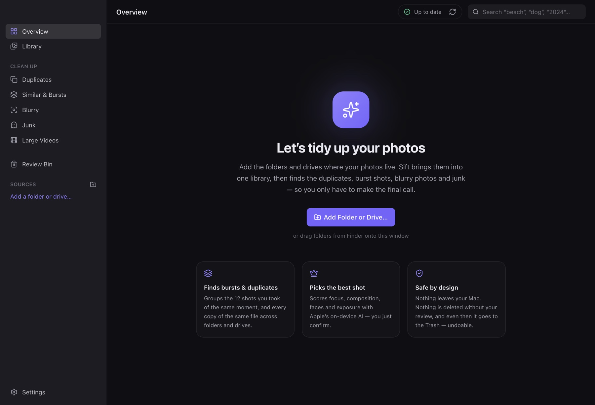
Click Add Folder or Drive…, or drag folders from Finder onto the window. Add as many as you like: Pictures, Desktop, an old backup, an external hard drive. Sift shows them all as one library, and you can add more later with the + next to Sources in the sidebar.
macOS will ask for permission, for example “Sift would like to access files in your Documents folder” or “…on a removable volume”. Click Allow. Sift needs to read your photos to analyze them. It never changes them.
- Main library ★. The first folder you add becomes your main library. When the same file exists in two places, Sift keeps the copy in the main library. To change it, hover a source, click ••• and choose Make main library.
- External drives can be unplugged. Their photos stay browsable (a grey dot means “not connected”), and you can clean them up the next time you plug the drive in.
- Removing a source (••• → Remove from Sift…) only makes Sift forget it. Your files are not touched.
- Sift leaves some things alone: Apple Photos libraries, other apps’ libraries (Lightroom, Final Cut, iMovie), hidden files and your Library folder.
Step 3
Let Sift look at everything
Sift now reads every photo and video: date, camera, focus, exposure, faces, and what’s in the picture, using Apple’s AI that is built into your Mac. The progress shows in the top bar. You can pause it, and the ↻ button checks your folders for changes (Sift also does this every time it opens).
The first run takes a while on a big library. You can start cleaning straight away; the numbers keep growing until the top bar says Up to date.
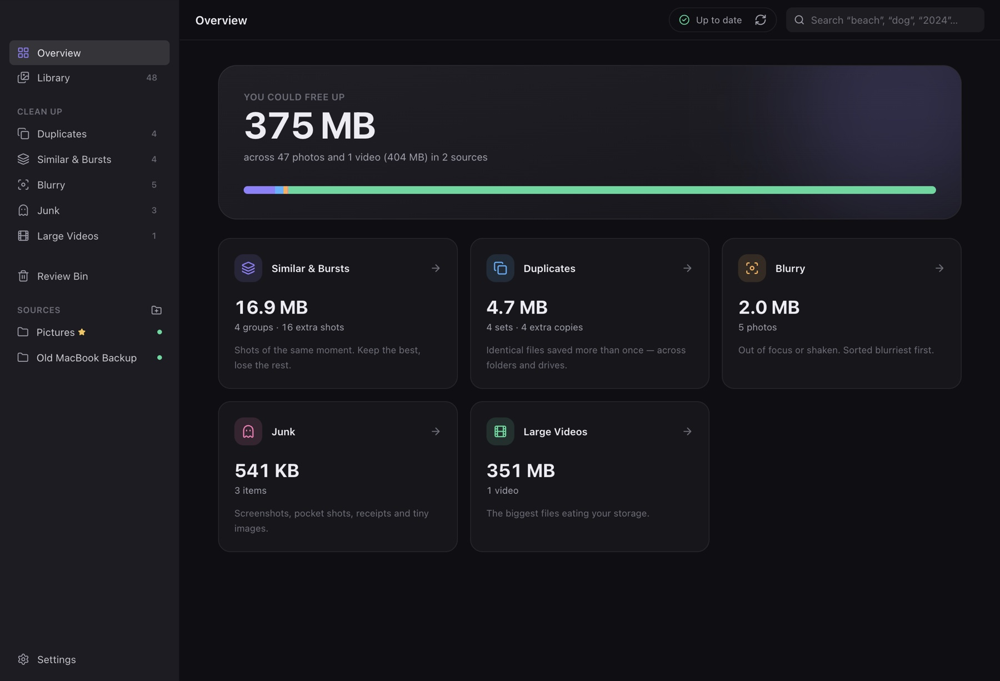
Step 4
Clean up bursts and similar shots
This is where most of the space hides: the eight photos you took of the same sunset. Similar & Bursts groups shots of the same moment and marks the best one with a crown.
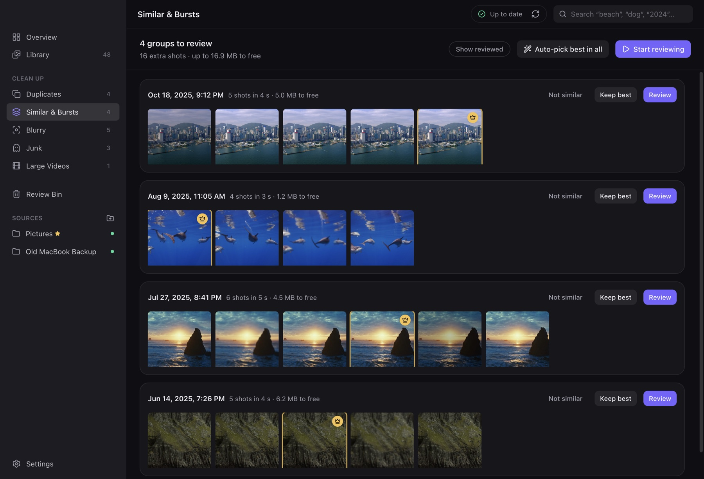
- Start reviewing walks you through every group, one at a time. This is the recommended way.
- Keep best accepts Sift’s choice for one group without opening it.
- Not similar tells Sift the group is fine as it is. It won’t be suggested again.
- Auto-pick best in all accepts Sift’s choice everywhere at once. Everything else still goes to the Review Bin first.
Reviewing a group
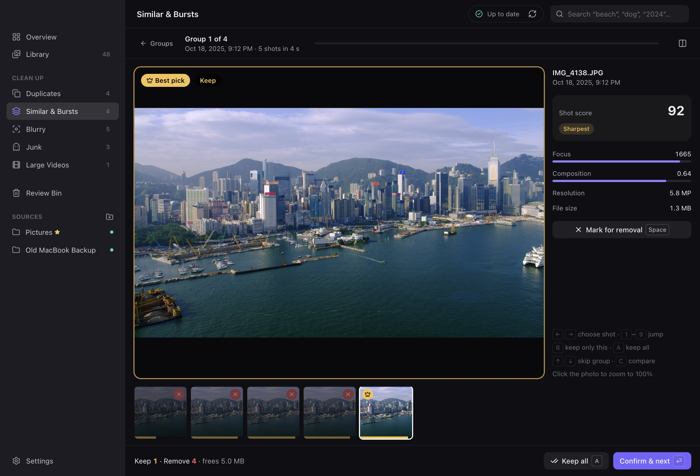
Look through the shots with ← →, press Space to keep or drop the one you’re looking at, and press Return to confirm and move on. Press C to compare two shots side by side, and click a photo to zoom to 100%. Changed your mind? ⌘Z undoes the last group.
The badges tell you why a shot won or lost: Sharpest Best composition Best faces Blurry Too dark Lower resolution
- 40%Focus
- 30%Composition
- 15%How faces came out
- 10%Exposure
- 5%Resolution
That’s how the shot score is built. Focus is measured in small tiles, so a portrait with a soft background still counts as sharp. If a group mixes things you didn’t expect, or misses shots you’d call the same moment, adjust Similarity and Burst window in Settings; the groups update right away.
Duplicates
Duplicates are files that are exactly the same, byte for byte, wherever they are: a photo in Pictures and again in an old
backup, or IMG_4110 (1).JPG next to the original. Since the copies are identical, removing the extras never loses a
photo.
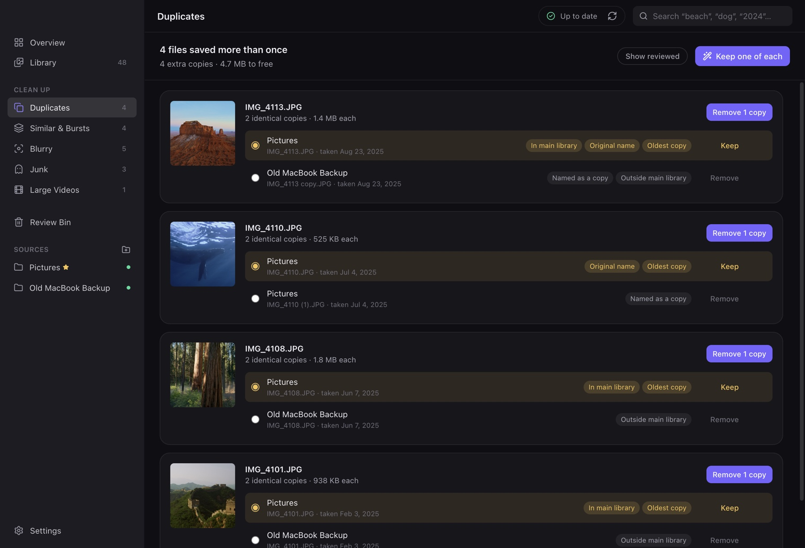
Sift keeps the copy that is In main library, has the Original name (not “copy” or “(1)”), isn’t sitting in Downloads or a messenger folder, and is the Oldest copy. Click Keep one of each to handle them all, or Remove 1 copy on a single file. You can pick a different copy with the circle on the left.
Blurry, Junk and Large Videos
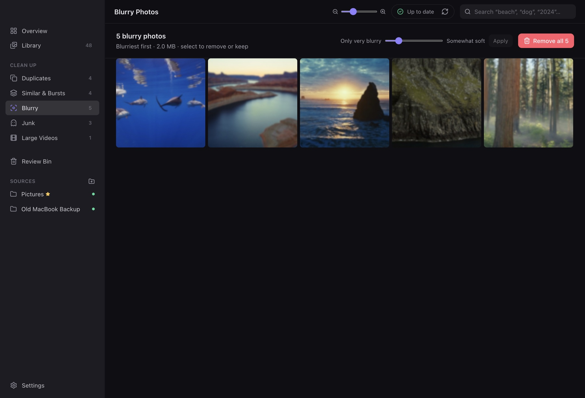
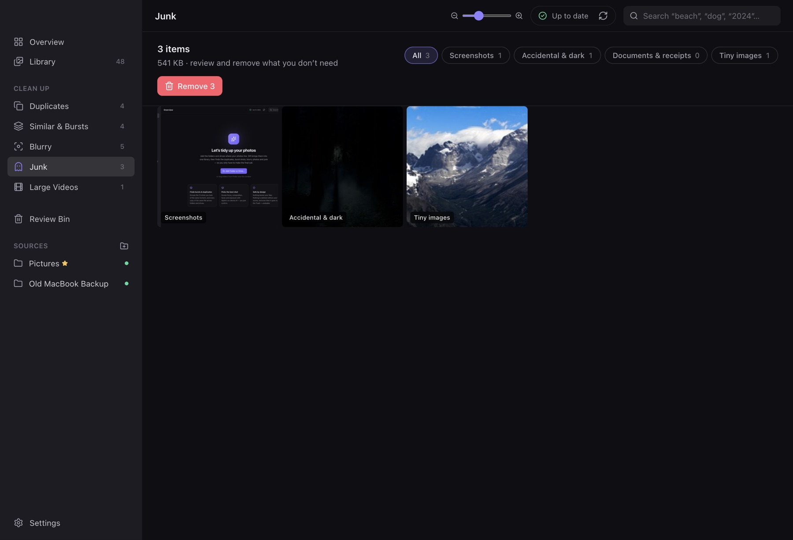
Large Videos lists videos over 200 MB, biggest first. Change the size in Settings.
These screens show photos in a grid. Click a photo to open it. To act on several at once, ⌘-click to select, Shift-click to select a range, or ⌘A for all. Then choose Remove ⌫ or Keep K. Kept photos stop appearing in the clean-up lists. The Remove all button at the top handles the whole list.
The Review Bin and the Trash
Sift never deletes anything on its own. Everything you remove goes through three stops, and every step can be undone.
- You click Remove In any clean-up screen or while reviewing a group. Undo right away, or ⌘Z
- Review Bin A last look inside Sift. The file hasn’t moved yet. Put back at any time
- macOS Trash Only after you click Move to Trash and confirm. Restore in Sift, or Put Back in Finder
- Gone Only when you empty the Trash yourself. Can’t be undone
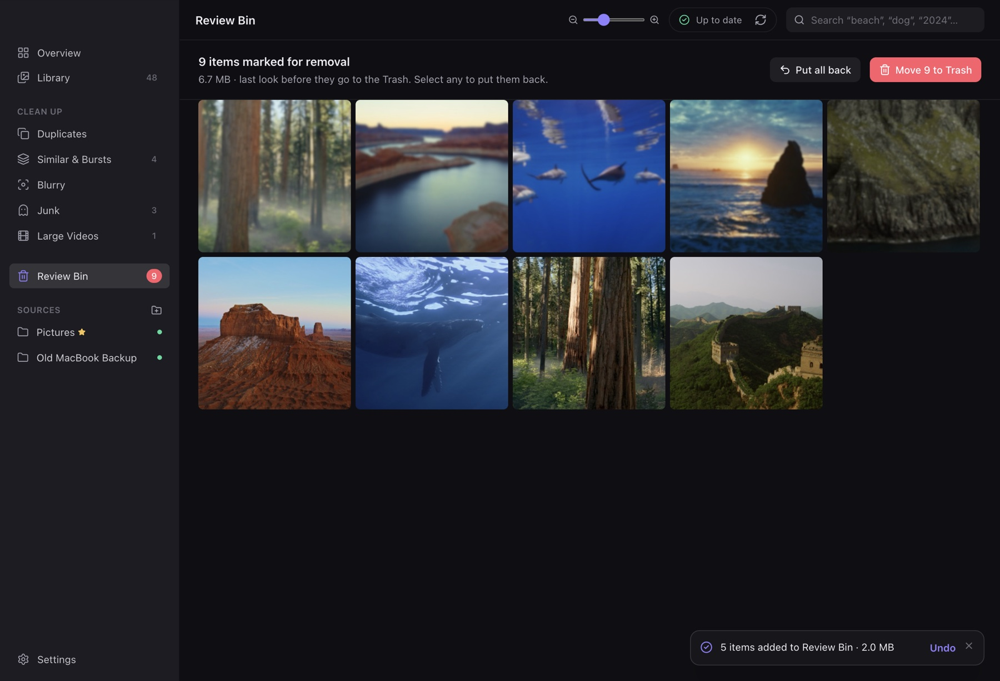
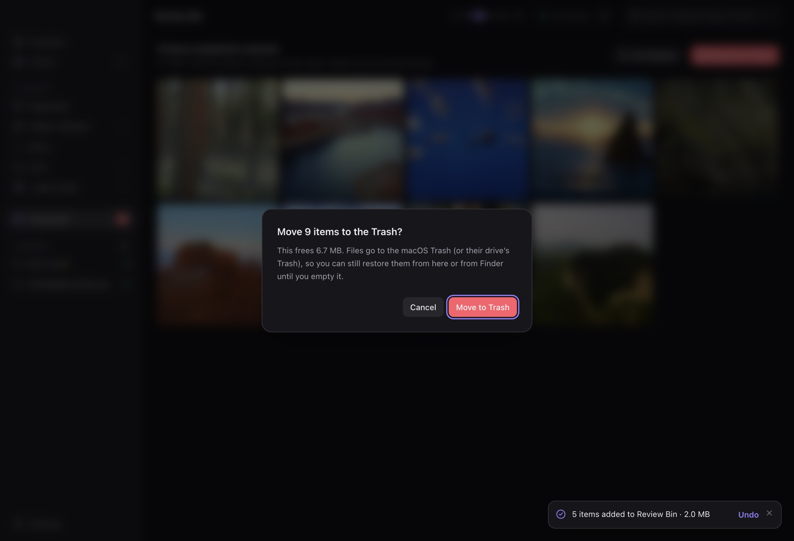
After a batch goes to the Trash, the Review Bin shows it under Recently removed with a Restore button, as long as the
files are still in the Trash. Some external drives have no Trash; there, Sift moves files into a folder called
Sift Removed at the top of the drive instead.
Library, viewer and search
Library shows everything, newest first, grouped by month. Filter by photos, videos or source, and change the thumbnail size with the slider in the top bar or ⌘+ / ⌘−.
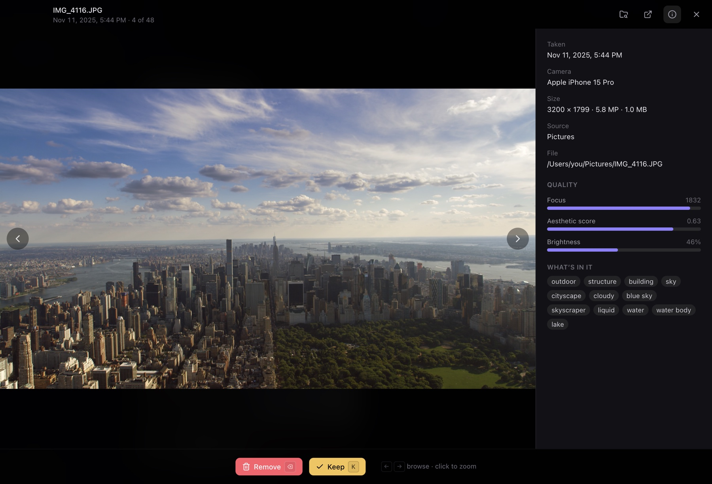
In the viewer, browse with ← →, remove with ⌫, keep with K, and press R to show the file in Finder. Click the photo to zoom in.
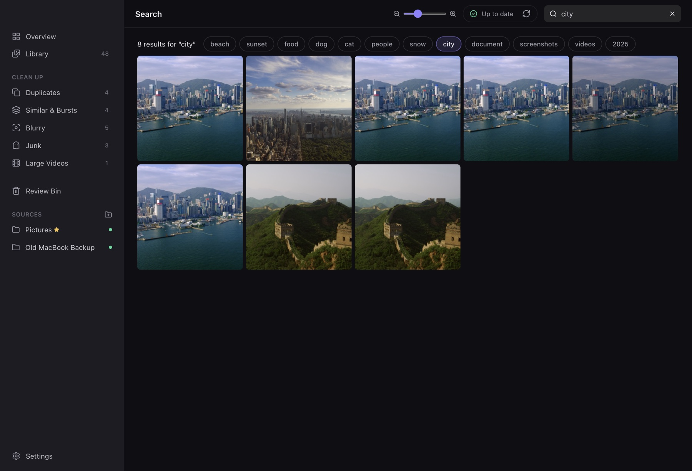
Press ⌘F and type what you’re looking for. You can combine words, like beach 2024 or dog july:
- Things in the photo: beach, sunset, food, dog, snow, city, document…
- Dates: a year (
2023) or a month (july) - Kinds:
videos,photos,screenshots,people - Names: part of a file name, folder name or camera (
iphone,vacation)
Settings
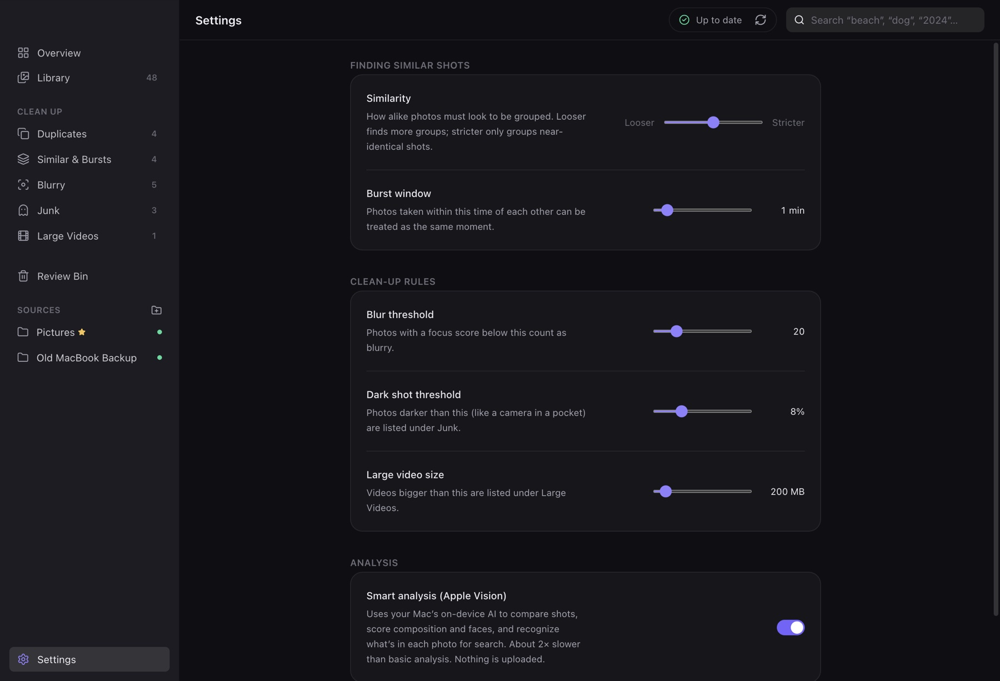
| Setting | What it changes |
|---|---|
| Similarity | How alike photos must look to be grouped. Looser finds more groups; stricter groups only near-identical shots. |
| Burst window | How far apart in time photos can be and still count as the same moment. Default 1 minute. |
| Blur threshold | Photos with a focus score below this are listed as Blurry. |
| Dark shot threshold | Photos darker than this are listed under Junk as accidental shots. |
| Large video size | Videos bigger than this appear in Large Videos. Default 200 MB. |
| Smart analysis | Uses Apple’s built-in AI to compare shots, score composition and faces, and recognize what’s in photos for search. Turn it off for about twice the speed with simpler results. |
Keyboard shortcuts
Reviewing a group
| ← → | Previous / next shot |
| 1–9 | Jump to a shot |
| Space | Keep or drop this shot |
| B | Keep only this shot |
| A | Keep all shots |
| C | Compare side by side |
| ↑ ↓ | Previous / next group |
| Return | Confirm and go to the next group |
| ⌘Z | Undo the last group |
| Esc | Back to the list |
Viewer
| ← → | Previous / next photo |
| ⌫ | Remove, or put back |
| K | Keep |
| I | Show or hide info |
| R | Show in Finder |
| Esc | Close |
Grids and everywhere
| ⌘-click | Select a photo |
| Shift-click | Select a range |
| ⌘A | Select all |
| ⌫ / K | Remove / keep the selection |
| ⌘F | Search |
| ⌘+ ⌘− | Bigger / smaller thumbnails |
Questions and fixes
macOS says Sift “can’t be opened” or “is damaged”
Follow Step 1: click Done, then System Settings → Privacy & Security → Open Anyway.
If macOS insists the app is damaged, open Terminal and run this once, then open Sift again:
xattr -dr com.apple.quarantine /Applications/Sift.app
How do I update to a new version?
Quit Sift (⌘Q), open the new .dmg, drag Sift onto Applications and choose Replace. Your
library, decisions and Review Bin are kept. macOS may ask you to click Open Anyway once more for the new download.
Can Sift clean my iPhone or my Apple Photos library?
Not yet. Sift works with folders and drives. Support for the Apple Photos library and phone versions for iPhone and Android are planned.
Does Sift upload my photos or need the internet?
No. All analysis happens on your Mac with Apple’s built-in frameworks. There’s no account and nothing is sent anywhere.
The first scan is slow
Sift looks at every photo in detail the first time. After that it only checks what changed, which is quick. You can pause it from the top bar, clean up while it works, or turn off Smart analysis in Settings to go about twice as fast with simpler results.
Where does Sift keep its data? How do I start over?
In ~/Library/Application Support/Sift: the index of your library and the thumbnails. To start fresh, quit Sift and
delete that folder. Your photos are not affected.
How do I uninstall Sift?
Quit Sift and drag it from Applications to the Trash. To remove its index and thumbnails too, delete
~/Library/Application Support/Sift. Your photos are not affected.